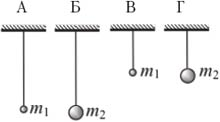
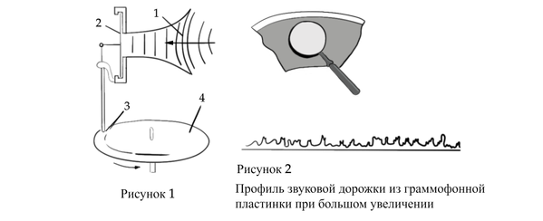
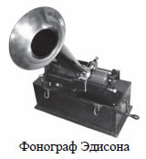

Установите соответствие между физическими понятиями и примерами этих понятий. К каждой позиции первого столбца подберите соответствующую позицию из второго столбца и запишите выбранные цифры под соответствующими буквами.
Установите соответствие между техническими устройствами и физическими закономерностями, лежащими в основе их работы. К каждой позиции первого столбца подберите соответствующую позицию из второго столбца и запишите в таблицу выбранные цифры под соответствующими буквами.
Луч прожектора хорошо виден в тумане, но хуже – в ясную погоду. Какое явление помогает видеть луч?
Прочитайте текст и вставьте на места пропусков слова (словосочетания) из приведенного списка. Запишите выбранные цифры под соответствующими буквами.
Если воздушный шарик тереть о шерстяной свитер и поднести, не касаясь, к струе воды, то можно наблюдать, как струя воды отклоняется, притягиваясь к шарику (см. рисунок). Какие явления наблюдаются во время данного опыта?

Автобус везёт пассажиров по прямой дороге со скоростью 10 м/с. Пассажир равномерно идёт по салону автобуса со скоростью 1 м/с относительно автобуса, двигаясь от кабины водителя к задней двери. Чему равен модуль скорости пассажира относительно дороги?
Изображённая на рисунке система находится в равновесии. Блоки и нить очень лёгкие, трение пренебрежимо мало. Масса груза 2 равна 4 кг. Чему равна масса груза 1?
На рисунке представлен график зависимости температуры t твердого тела от полученного им количества теплоты Q. Масса тела 2 кг. Чему равна удельная теплоемкость вещества этого тела? Ответ запишите в джоулях на килограмм на градус Цельсия.

В электрической цепи (см. рисунок) амперметр А1 показывает силу тока 1,5 А, амперметр А2 — силу тока 0,5 А. Чему равна сила тока, протекающего через лампу?
На какую длину волны нужно настроить радиоприёмник, чтобы услышать радиостанцию, которая вещает на частоте 500 кГц?
Сколько электронов содержит нейтральный атом изотопа 1024Ne?
Газ нагревают в закрытом сосуде. Как в процессе нагревания изменяются объём газа и давление газа?
Для каждой величины определите соответствующий характер изменения:
Запишите в таблицу выбранные цифры для каждой физической величины. Цифры в ответе могут повторяться.
| Объём газа | Давление газа |
|---|---|
Человек переводит взгляд со страницы книги на облака за окном. Как при этом меняются фокусное расстояние и оптическая сила хрусталика глаза человека?
Для каждой величины определите соответствующий характер изменения:
Запишите в таблицу выбранные цифры для каждой физической величины. Цифры в ответе могут повторяться.
| Фокусное расстояние хрусталика | Оптическая сила хрусталика |
|---|---|
На рисунке приведены графики зависимости проекции скорости υx от времени \(t\) для двух тел, движущихся вдоль оси \(Ox\).
Из приведённых ниже утверждений выберите два правильных и запишите их номера.
Необходимо экспериментально установить, зависит ли период колебаний математического маятника от длины нити. Какую из указанных на рисунке пар маятников можно использовать для этой цели?

Учитель провёл опыты с прибором, предложенным Паскалем. В сосуды, дно которых имеет одинаковую площадь и затянуто одинаковой резиновой плёнкой, наливается жидкость. Дно сосудов при этом прогибается, и его движение передаётся стрелке. Отклонение стрелки характеризует силу, с которой жидкость давит на дно сосуда. Условия проведения опытов и наблюдаемые показания прибора представлены на рисунке.

Выберите из предложенного перечня два утверждения, которые соответствуют результатам проведённых экспериментальных наблюдений. Укажите их номера.
Определите электрическое сопротивление лампочки. Для этого соберите экспериментальную установку, используя источник тока, вольтметр, амперметр, ключ, реостат, соединительные провода и лампочку. При помощи реостата установите в цепи силу тока 0,3 А. Абсолютная погрешность измерения силы тока равна ±0,02 А, абсолютная погрешность измерения напряжения равна ±0,2 В.
В бланке ответов № 2:
Прочитайте текст и выполните задание 18.
Открытие звукозаписи
Люди издавна стремились если не сохранить звук, то хотя бы как-то его зафиксировать. Запись музыкальных произведений, рассказов и пьес на граммофонные или патефонные пластинки стала массовой формой звукозаписи.
На рисунке 1 дана упрощённая схема механического звукозаписывающего устройства. Звуковые волны от источника звука (певца, оркестра и т.д.) попадали в рупор 1, в котором была закреплена тонкая упругая пластинка 2, называемая мембраной. Под действием звуковой волны мембрана начинала колебаться. Колебания мембраны передавались связанному с ней резцу 3, остриё которого оставляло при этом на вращающемся диске 4 звуковую бороздку. Звуковая бороздка закручивалась по спирали от края диска к его центру. На рисунке 2 показан вид звуковых бороздок на пластинке, рассматриваемых через лупу при большом увеличении.
При воспроизведении звука граммофонную пластинку ставят под иглу, связанную с мембраной граммофона, и приводят пластинку во вращение. Двигаясь по волнистой бороздке пластинки, конец иглы колеблется, вместе с ним колеблется и мембрана, причём эти колебания довольно точно воспроизводят записанный звук.

В исторически первом приборе Эдисона для записи и воспроизведения звука (см. рисунок) звуковая дорожка шла по цилиндрической спирали на сменном вращающемся барабане (полом цилиндре). Звук записывался в форме дорожки, глубина которой была пропорциональна громкости звука. А что меняется в профиле звуковой дорожки при увеличении громкости звука во время использования дискового фонографа, рассмотренного в тексте? Ответ поясните.

Фонограф ЭдисонаВ сосуд с водой опустили кусок дерева. Изменилось ли при этом, и если изменилось, то как, давление на дно сосуда, если вода из сосуда не выливалась? Ответ поясните.
С высоты 100 м мяч массой 2 кг падает из состояния покоя. Определите модуль работы силы сопротивления за время падения, равное 5 с. Движение мяча считать равноускоренным.
Какое минимальное количество керосина надо сжечь для нагревания 4,6 кг воды от начальной температуры t₁ = 20 °C до температуры кипения? Считать, что вся энергия, выделяющаяся при сгорании топлива, расходуется на нагревание воды.
КПД электродвигателя подъёмного крана, который равномерно за 20 с поднимает груз массой 152 кг на высоту 12 м, равен 60%. Напряжение в электрической сети составляет 380 В. Чему равна сила тока в электродвигателе?